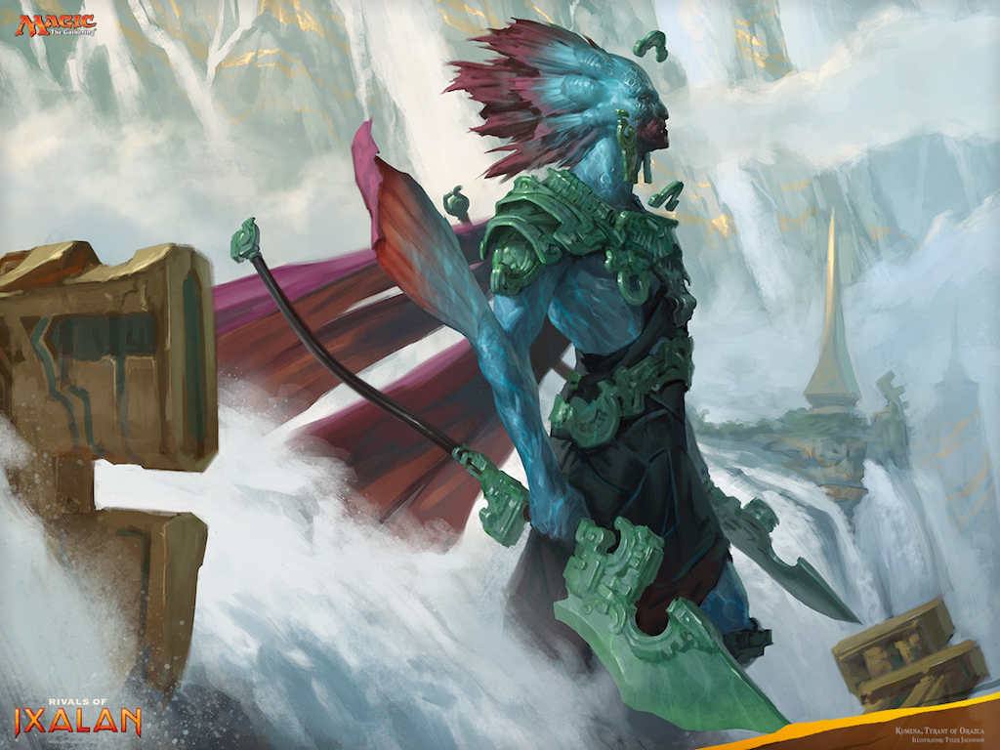
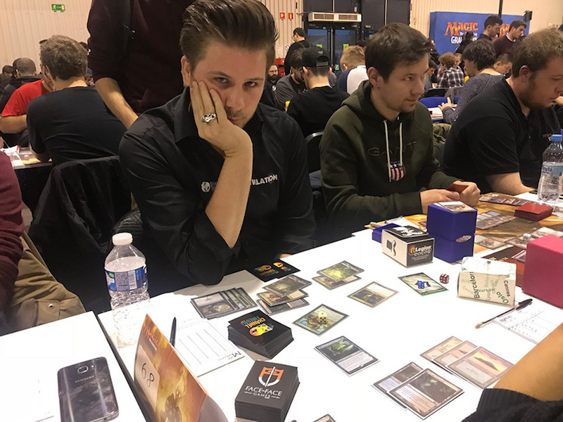
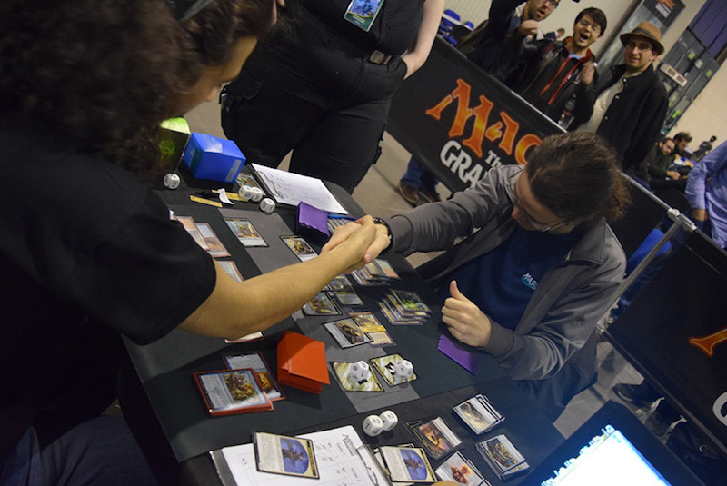

14 stycznia 2018
Znasz już podstawowe zasady gry w Magica. Złożyłeś właśnie swoją pierwszą talię. Pograłeś z kolegami w swojej okolicy i na osiedlu nie masz sobie równych. Pora zatem wypłynąć na szersze wody i spróbować sił w prawdziwym turnieju.

Pierwszym krokiem będzie znalezienie odpowiedniej miejscówki. Turnieje w ogromnej większości przypadków organizowane są przez sklepy z grami karcianymi, planszowymi, itp. współpracującymi z producentem Magica. Rzadziej w kawiarniach, barach, czy też klubach. Bazę sklepów można znaleźć na oficjalnym lokalizatorze Wizardsów. Znajduje się tam również informacja o najbliższych turniejach, ale z doświadczenia mogę powiedzieć, że umieszczane są tam tylko te największe.
Po namierzeniu sklepu w naszej okolicy najprościej oczywiście będzie tam podjechać i osobiście zapytać o organizowane wydarzenia. Możemy oczywiście spróbować odnaleźć stronę www lub też na Facebooku. Dobrym rozwiązaniem może okazać się odwiedzenie forum największego polskiego serwisu społeczności Magic: the Gathering, gdzie w działach regionalnych wszystkie sklepy z danego województwa umieszczają informacje o turniejach.

Formaty gry w Magic: the Gathering, a tym samym formaty w jakich organizowane są turnieje omawiałem w poprzednim odcinku. Na początek przyjrzymy się rozgrywkom typu constructed. Do dyspozycji mamy zatem Vintage, Legacy, Modern i Standard. Zakładam jednak, że trzy pierwsze raczej od razu odpadają, ze względu na cenę kart niezbędnych do stworzenia sensownej talii, a także na to, że są organizowane zdecydowanie rzadziej.
Mając już złożony deck do grania, składający się z minimum 60 kart talii podstawowej i maksimum 15 sideboardu polecam wszystko włożyć w koszulki lub protektory. Karty do Magica, podobnie z resztą jak do każdej innej karcianki czy planszówki, dość łatwo ulegają przetarciu czy stopniowemu niszczeniu podczas grania. Może to nie tylko utrudnić nam w przyszłości odsprzedanie czy wymianę kart, ale również być zinterpretowane jako ich znaczenie, co jest zabronione.

Oprócz talii do grania, niezbędne będzie coś do śledzenia punktów życia swojego i przeciwnika. Jedni używają w tym celu kostki dwudziestościennej, inni smartfona z dedykowaną appką, a ja wolę tradycyjną kartkę i długopis. Przed wszystkim dlatego, że w razie wątpliwości można prześledzić jak zmieniał się poziom życia danego gracza. Do kompletu wyposażenia turniejowego (a i w grze towarzyskiej również się przydają) należy dopisać zwykłe kostki oraz znaczniki. Bardzo często będziemy musieli położyć counter na kontrolowanej kreaturze, aby oznaczyć jego dodatkowe punkty życia i ataku, albo też położyć na polu bitwy token symbolizujący stwora.
Na koniec wspomnę, że aby wystartować w turnieju sankcjonowanym przez Wizards of the Coast należy posiadać numer DCI. Coś w rodzaju identyfikatora, który zostaje wprowadzony do centralnej bazy danych i przypisany do naszego konta gracza. Mając tenże numerek będziemy mogli wystartować w dowolnym turnieju medżika w dowolnym miejscu na świecie. Można go wyrobić przed każdym turniejem, gdyż organizator zawsze ma jakąś pulę do przydzielenia nowym graczom. Rejestrację nowego DCI należy dokończyć po powrocie do domu, tworząc konto w serwisie Wizardsów i łącząc z nim otrzymany numer. To tyle na dziś, a w kolejnym odcinku przyjrzymy się turniejom limited.